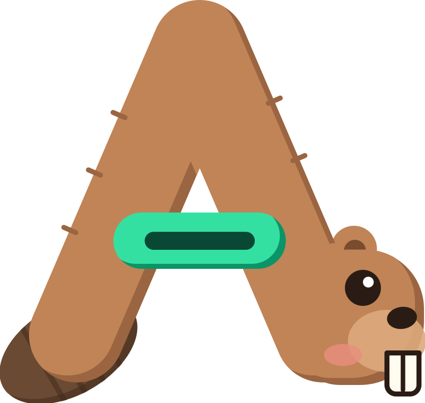
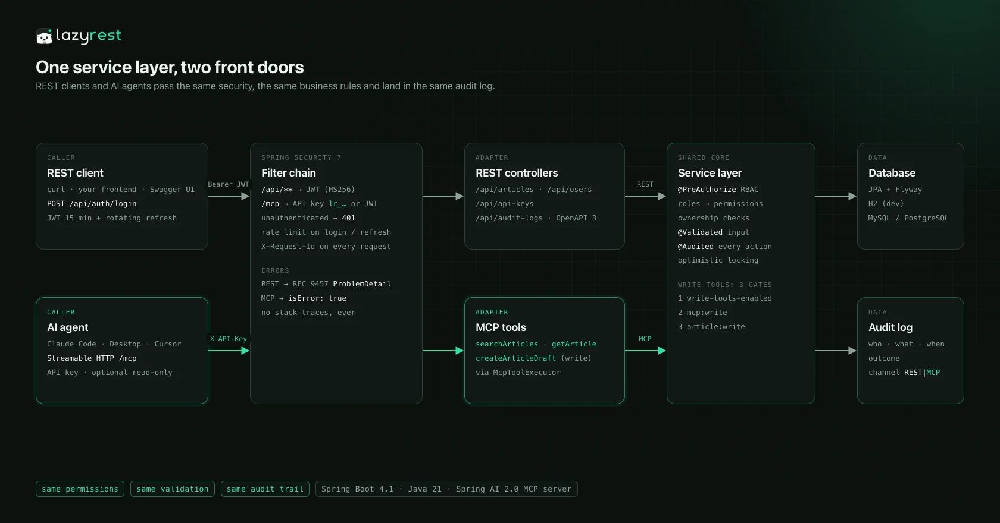
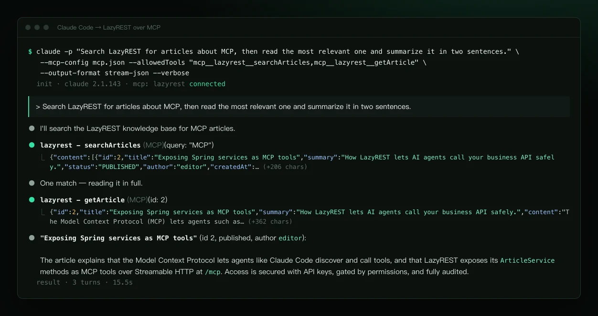
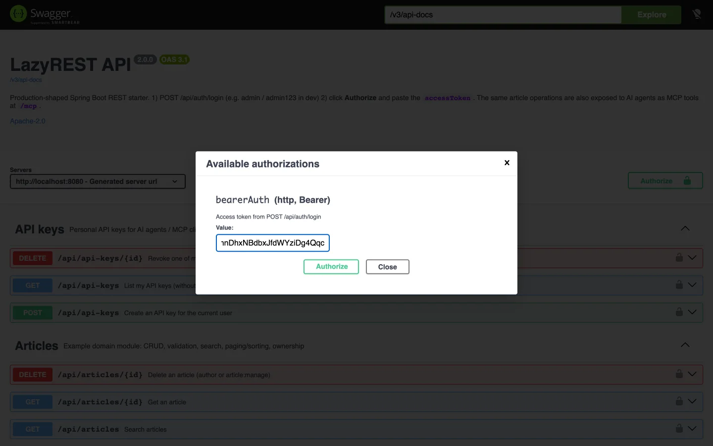
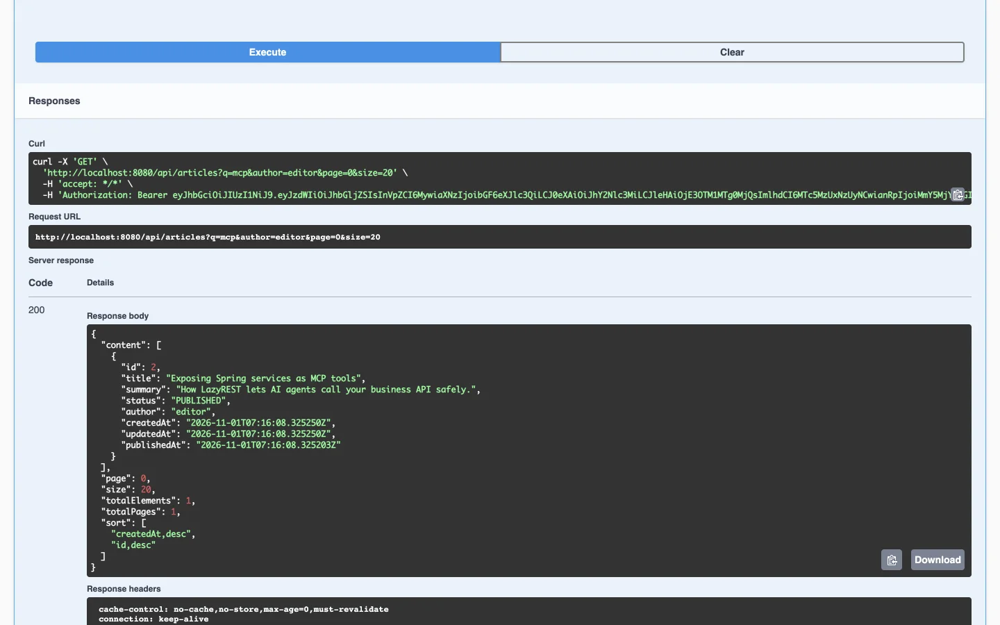
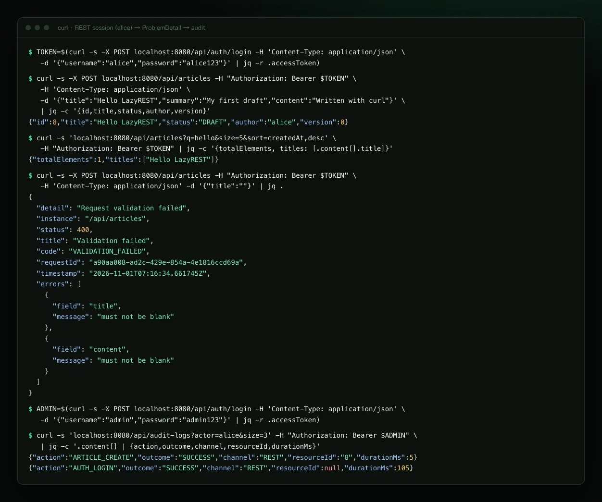
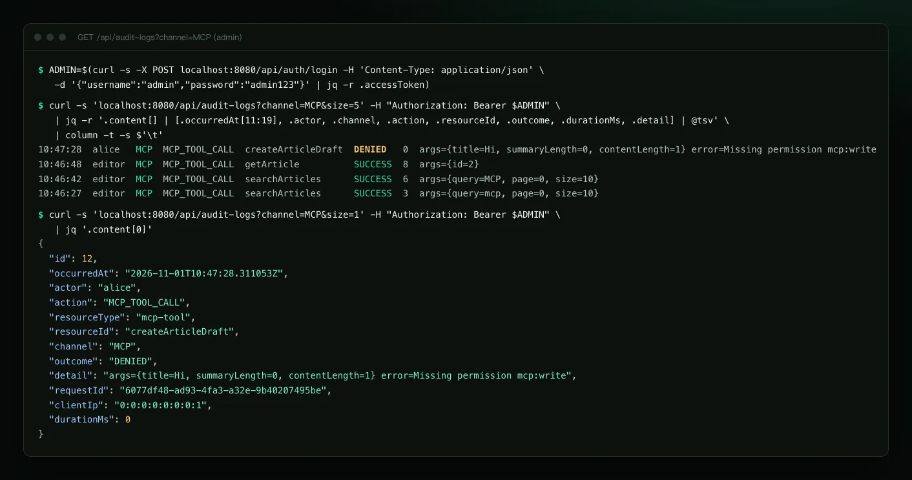
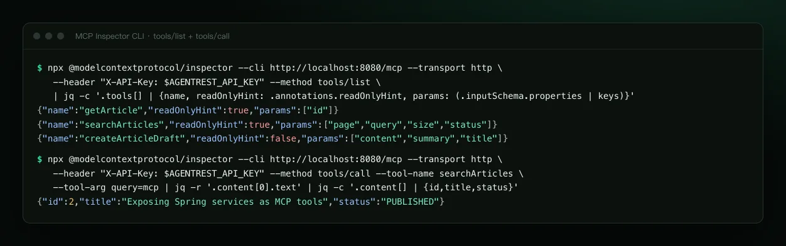

Your REST API,
ready for AI agents.
An honest, production-shaped Spring Boot REST starter. Selected service methods are also exposed as MCP tools, so Claude Code, Claude Desktop and Cursor can call your business API with the same permissions, validation and audit trail as REST.
Only JDK 21 needed: ./mvnw spring-boot:run. No database, Redis or Docker.

$ claude mcp add --transport http agentrest \ http://localhost:8080/mcp --header "X-API-Key: ar_…" $ claude -p "Search AgentREST for articles about MCP…" ● agentrest - searchArticles(query: "MCP") ⎿ 1 result · "Exposing Spring services as MCP tools" ● agentrest - getArticle(id: 2)
The problem
Agents need your business API, safely
Teams want AI agents to look up orders, read the knowledge base and draft content. The hard part is not “can it call the API” but “does it follow the rules when it does”.
Let the agent hit the database
Bypasses every business rule: no permissions, no ownership checks, no validation, and no record of who did what.
Build a separate agent API
Two sets of permissions, validation and auditing that drift apart over time, and the drift is where the holes are.
Agents use the same service layer
MCP tools are thin adapters over the same services as REST: @PreAuthorize, ownership, @Validated and @Audited are all reused.
How it works
One service layer, two front doors
REST clients use JWTs; AI agents use a personal API key on /mcp (Streamable HTTP). Both pass the same Spring Security filter chain and land in the same database and the same audit table.

isError: true plus one readable sentence (MCP). Never a stack trace.MCP in 3 steps
Let Claude Code call your API
The dev profile ships a demo API key bound to editor. Create your own with POST /api/api-keys, read-only recommended.
Start the app
In-memory H2 with demo data; the MCP endpoint is /mcp.
$ ./mvnw spring-boot:runRegister the MCP server
Claude Code speaks HTTP natively; pass the key as a header.
$ claude mcp add --transport http agentrest \
http://localhost:8080/mcp \
--header "X-API-Key: ar_dev_editor_0123456789abcdefghijklmnop"Just ask
The agent picks the tools; every call lands in the audit log (channel=MCP).
> Search AgentREST for articles about MCP, then read the most relevant one and summarize it in two sentences.
claude -p run (its stream-json transcript laid out as a terminal, content unchanged). Claude Desktop works through mcp-remote; the MCP Inspector CLI is verified too.What's inside
Everything listed exists and is tested
Not included, so not claimed: caching / Redis, file upload, multi-tenancy, an OAuth2 authorization server, MFA. Add them when you need them.
Auth auth
BCrypt login, JWT access tokens (HS256, 15 min), opaque refresh tokens: hashed, rotated on every use, reuse detection revokes the family. Per-IP rate limit on login / refresh / register (429 + Retry-After).
API keys
ar_ prefix (legacy lr_ keys from 2.0 keep working), stored as SHA-256 only, shown once, revocable, optionally read-only; accepted on /mcp only.
RBAC user
Roles plus fine-grained permissions (article:write, audit:read, mcp:write …), @PreAuthorize method security, admin user management, first admin bootstrapped from env vars.
Example domain article
CRUD, Jakarta Validation, paging + whitelisted sorting, safely escaped search, ownership checks (others' drafts 404, editing others' articles 403), optimistic locking, publishing. Delete it in one go.
Audit audit
An @Audited aspect records who, what, outcome (SUCCESS / DENIED / FAILURE), channel (REST / MCP), requestId, IP and duration, persisted in its own transaction and queryable by admins.
MCP mcp
Streamable HTTP endpoint /mcp: searchArticles, getArticle, createArticleDraft, with JSON schemas and hints like readOnlyHint. Authentication required.
Errors & tracing
RFC 9457 application/problem+json with code, requestId and field-level errors; X-Request-Id in the log MDC.
Persistence
Spring Data JPA + Flyway migrations (Hibernate only validates). dev = H2 + demo data; prod = MySQL 8 or PostgreSQL, refusing to start without secrets.
Ops & delivery
OpenAPI 3 + Swagger UI, Actuator (only health public), Prometheus, graceful shutdown, virtual threads; multi-stage Dockerfile, docker-compose, GitHub Actions CI. 68 tests + Testcontainers.
Security model
An agent can do exactly what its key's owner can do
Authentication required
/mcp accepts X-API-Key: ar_… (or Bearer ar_…) as well as normal JWTs; anything else gets a 401 ProblemDetail. Read-only keys keep only *:read permissions.
Write tools: three gates
If any gate is closed, nothing is written. Agents can only create drafts; publishing always takes a human (REST only).
Every call audited
Each tool call records an MCP_TOOL_CALL entry (argument summary, outcome, duration); the business actions inside are recorded with channel=MCP. Tool errors go back to the model as one readable sentence, with no internals.
write-tools-enabledoff by default in prod; when off, the tool is not even in tools/list
mcp:writeand not a read-only key
article:writethe very same check as REST
Keep in mind: registering a tool exposes it; whatever an agent reads enters the model context; user-written content can carry prompt injection aimed at agents, which is why publishing stays human. Not covered yet: MFA, OAuth for MCP, TLS (terminate it at your reverse proxy).
Quick start
One command to run it
Local dev (JDK 21 only)
$ git clone https://github.com/melonlee/AgentREST.git $ cd AgentREST $ ./mvnw spring-boot:run
Swagger UI: http://localhost:8080/swagger-ui.html · MCP: http://localhost:8080/mcp
| admin / admin123 | everything: users, audit, Actuator |
| editor / editor123 | write + publish articles, MCP write tools |
| alice / alice123 | read articles, write own drafts |
Demo users and the demo key exist in the dev profile only.
Docker Compose (MySQL 8.4)
$ cp .env.example .env # set JWT_SECRET, database and admin passwords $ docker compose up --build
Runs the prod profile: Flyway creates the schema, the first start creates the admin from AGENTREST_ADMIN_*, and a missing required variable stops startup with a message saying which one. For PostgreSQL just change DB_URL.
As a template: click Use this template, change the coordinates and package, delete the article example module, add your domain.
Screenshots
All taken from the running app
Swagger UI shots are real browser captures; terminal shots are real command output, only laid out.


GET /api/articles


tools/list and tools/callFAQ
Questions
Can I run several replicas?
The REST side is stateless, so yes. MCP Streamable HTTP sessions live in memory: use sticky sessions with several replicas, or switch to protocol: STATELESS (and swap the transport bean in McpServerConfig for the stateless variant).
Does MCP support OAuth?
Not yet. Authentication is a personal API key (or a normal JWT). OAuth 2.1 for MCP is on the roadmap; until there is an authorization server, AgentREST deliberately does not advertise OAuth metadata in WWW-Authenticate, so clients don't start a login flow that cannot succeed.
Is the rate limit accurate across instances?
No. The login / refresh / register limiter is in-memory per instance, so each replica counts on its own. Swap in Bucket4j + Redis when you need a global limit.
Is there caching / Redis?
No. Nothing in the example needs it, so v2 does not claim it.
Is production safe by default?
With the prod profile, a missing JWT_SECRET or database config stops startup, the dev secret is rejected, MCP write tools, self-registration and Swagger UI are off by default, and Actuator exposes only health.
Can I use PostgreSQL?
Yes. Set DB_URL to jdbc:postgresql://host:5432/agentrest and Flyway picks db/migration/postgresql. CI runs the full flow on MySQL 8.4 and PostgreSQL 17 with Testcontainers.
You write the business logic. The beaver wires your API to AI.
One command to run it, and your endpoints are MCP tools too. The beaver is AgentREST’s mascot, part of the FantasyAI Lab mascot family with 喵想.